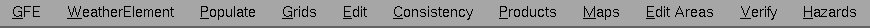

GFE Main Menu
February 15, 2012
This document describes the main menu of the GFE (Graphical Forecast
Editor).

Table of Contents
GFE
Editing
Preferences
Viewing
Preferences
Show Warnings
Break Lock...
Delete Users....
Define Config
and ifpIMAGE Files...
Define Smart Tools...
Define Procedures...
Define Text Products...
Define Time Ranges
Site Activation
WeatherElement
Weather
Element Groups
Weather
Element Browser...
Manage Hidden
Weather Elements
Populate
Procedures (List of Procedures)
Copy
Selected Grids From...
Copy All
Grids
From...
Grids
Interpolate...
Split Grids
Fragment Grids
Create Grids From
Scratch
Assign
Default
Value
Assign PickUp Value
Delete Grids
Select Grids
By Time
Select All Weather
Elements
Deselect All
Time Shift...
Find
Weather Element
Edit
Undo Grid Edit
Undo Edit Area
Procedures
(List
of procedures)
Save Forecast...
Revert
Forecast...
Consistency
Procedures
(List of ISC Procedures)
Clear
Selected Highlights
Clear All
Highlights
Send Intersite Grids
ISC Request/Reply
ISC Send Enable
Products
Publish to
Official...
Formatter Launcher...
Scripts...
Process Monitor...
GHG Monitor...
Maps
Topography
Samples
ISC Markers
Map List
Edit Areas
Verify
Procedures
Hazards
Procedures
Reset Practice
Clear VTEC
Practice Table
Clear Fcst Grids
Help
Online
Table Of Contents...
Show Tool Tips
About CAVE
Workstation
GFE Menu
Editing Preferences
Missing Data Mode
The Missing Data Mode specifies how to handle
missing
data when running a Smart Tool. The options are:
- Stop on Missing Data: The system stops execution
of the Smart Tool if
requested
data is missing.
- Skip on Missing Data: The system will skip grids
for which there is
missing
data. A User Alert message will report which grids were skipped.
- Create on Missing Data: The system will
automatically interpolate grids
to supply the missing grids. A User Alert message will report which
grids
were created through interpolation. Note that if a grid to be created
is
not between two existing grids, it will not be extrapolated. In this
case,
the grid being edited will be skipped. If the created grids are in the
Fcst database, they will be added to the Fcst database. If running from
the GFE, they can be optionally be saved by the user. If running in
background
mode, they will be automatically saved at the end of the procedure with
all other edited grids. If the created grids are in a non-mutable
database,
they will not be added to the database and will be discarded after
execution
of the tool.
Temporal Editor Mode: Relative
Allows the user to choose the Temporal Editor Mode to be either
Relative
or Absolute. If the button is selected, the mode is Relative.
Otherwise,
the mode is Absolute. The default is as set for
TemporalEditorAbsoluteEditMode
in the gfe configuration file.
When performing an edit in the absolute mode, each point in the Edit
Area will be set to the value indicated in the Temporal Editor. When
performing
an edit in the relative mode, each point in the Edit Area will be
incremented
or decremented by the magnitude of the edit in the Temporal Editor.
Vector Editor Mode
Allows the user to control the component of the data to be modified
when
performing an Edit Action. The possible options are Magnitude Only,
Direction
Only, or Both. The default is as set for WindEditMode in the gfe
configuration
file. This may also be set from the Vector
PickUp Dialog.
Smoothing Algorithm
Allows the user to control the amount (area) of smoothing. The
popup
menu items reflect the smoothing influence by the number of grid
cells.
The Smoothing default value and the selection of values may be configured
in the gfe configuration file.
Wx/Discrete: Combine
Allows the user to control whether an edit action replaces the existing
weather/discrete data or combines the new value with the existing
weather/discrete
data. If the button is selected, an edit action will combine
weather/discrete
data. Otherwise, the weather/discrete data will be replaced. The
default
is as set for WeatherDiscreteCombineMode in the gfe configuration
file.
The Weather Combine Mode may also be set from the Weather
PickUp Dialog and Discrete
PickUp Dialog.
Select Grids When Stepping
Specifies whether the selection time range will track the spatial
editor
time when time stepping. Time stepping is accomplished using the
GFE
toolbar stepping buttons or the keyboard
shortcuts.
When this preference is enabled (i.e., yes), the selection time range
will
be set to:
- the one hour period surrounding the spatial editor time, if there
is no
active weather element, or
- the time constraint box for the active weather element, if there
is no
grid that intersects the spatial editor time, or
- the valid time of the grid for the active weather element that
intersects
the spatial editor time.
In addition, all weather elements except the active weather element
will
be deselected.
When this preference is disabled (i.e., no), the selection time
range,
and the set of selected weather elements will not change when using the
GFE
toolbar step buttons and
keyboard shortcuts.
Auto Save...
The Auto Save Interval entry brings up the Auto
Save Interval Dialog. This dialog allows the user to enable or
disable
the automatic saving of modified weather elements. If enabled,
then
every few minutes all modified grids will be saved to the
database.
The interval may be changed from 1 minute to 60 minutes.
Contour Server Selection
Allows the user to choose which algorithm is to be used for the
conversion
of contours into a gridded field by selecting one of the buttons. The
default
is as set for ContourServer in the gfe configuration file. We recommend
that you try both methods and choose the one which works the best for
you.
| Mode |
Description |
| Contour Analyzer |
The Contour Analyzer makes a grid from paints on contour
lines, using
a simple analysis technique similar to Barnes. |
| Internal SIRS Server |
The Internal SIRS Server makes grids from contour lines
using
the TDL SIRS algorithm as written by FSL for the GFE. |
Interpolate Algorithm
The Interpolate Algorithm entry brings up the Interpolation
Algorithm Dialog. This dialog allows the user to select the
appropriate
interpolation algorithm for each scalar weather element.
Viewing Preferences
Quick View Mode
Allows the user to set the behavior of the Spatial Editor when the
pointer
is moved over the Grid Manager. If the button is selected, the data
displayed
in the Spatial Editor is controlled by the cursor position over the
Grid
Manager (i.e. the Spatial Editor displays the grid under the cursor).
Otherwise,
the data displayed in the Spatial Editor does not change when the
cursor
is moved over the Grid Manager time blocks. The default is off.
Image on Edit
Allows the user to set the display mode of the of a grid made editable.
If the button is selected, a grid made editable is automatically
displayed
as an image in the Spatial Editor. Otherwise, the display mode (Image
versus
Graphic) is not changed when a grid is made editable. The default is as
set for ImageOnActiveSE in the gfe configuration file.
Temporal Editor Overlay Mode
Allows the user to control the loading of new Weather Elements into the
Temporal Editor. If the button is selected, the Temporal Editor will
attempt
to overlay a newly loaded weather element with another weather element
of identical units. Otherwise, each newly loaded weather element will
have
its own pane in the Temporal Editor. The default is as set for
TemporalEditorOverlay
in the gfe configuration file.
Temporal Editor
Weather
Element Mode
This cascade menu permits choices of "All Weather Elements", "All
Weather
Elements w/o ISC", "Fcst Weather Elements", "Active Weather
Element",
and "Visible Elements Only". It controls the set of weather
elements
that appear in the temporal editor. Selection of "All Weather
Elements"
will mirror the weather elements that are loaded into the spatial
editor.
Selection of "All Weather Elements except ISC" will set the temporal
editor
to display all weather elements loaded into the spatial editor, except
for any ISC elements. Selection of "Fcst Weather Elements" will mirror
just those elements loaded into the spatial editor that are mutable,
i.e.,
from the Fcst database. Selection of the "Active Weather Element"
will set the temporal editor to have only the active weather element to
be displayed in the temporal editor. Selection of the "Visible Elements
Only" will set the editor to only have the visible set of weather
elements
that are displayed in the Grid Manager.
Temporal Editor Statistics Mode
Brings up the Temporal
Editor Statistics Mode Dialog, which permits the user to define the
type of statistics that are presented with the range-style
visualizations
in the temporal editor.
Time Scale Periods...
Brings up the Time
Scale Displayed Periods Dialog, which permits the user to define
which
of the named selection time ranges are displayed on the Time
Scale.
The initial setting can also be defined in the gfe configuration file
entry
Time
Scale Periods.
Edit Area Appearance...
Brings up the Edit
Area Appearance Dialog, which permits the user to define a color
and
a line width for the appearance of the edit area on the spatial
editor.
The initial setting can also be defined in the gfe configuration file
entry
Edit
Area Color and Border Width.
Wx/Discrete Show Description
If Show Description is on, then the Weather Pick Up
Value Dialog and Discrete Pick
Up Value Dialog will contain additional descriptive information for
each symbol. In addition to the two dialogs, the Spatial
Editor Color Bar and Temporal Editor Data Pane's MB3 Popup Menu items Set Common
Values To, Set Recent Values To..., and Set Session Values To...
also will contain the descriptive information. The default can be
controlled through the GFE configuration
file.
Show Warnings
Allows the user to enable or disable the display of warning messages.
If
the button is selected for a particular warning message, the message is
automatically displayed in the GFE.
Show Edit Action Time Range Warning
The Show Edit Action Time Range warning is displayed when the user
attempts
to edit data over a selected time range which
extends over more than one grid. Proceeding at this point will modify
more than one grid.
Show Empty Edit Area Warning
The Show Empty Edit Area warning is displayed when the user attempts
to edit data without having selected an edit area. Proceeding at this
point
will modify data over the entire grid. The defaults are as set for
ShowTimeRangeWarning
and ShowEmptyEditAreaWarning in the gfe configuration file.
Break Lock...
Breaks the lock(s) created by a different user or during a previous
session.
The Break Locks dialog
brings up the all of the lock(s) found in the mutable database and
allows
the user to select which lock(s) to break. Users are not required to
select
a time range prior to breaking locks.
Define Config and
ifpIMAGE
Files...
Brings up the Define
Configuration Dialog, which is used to create, view, delete, and
modify
configuration files for the GFE and for ifpIMAGE.
Define Smart Tools...
Brings up the Edit
Action
Dialog , which is used to create, view and execute smart tools.
Define Procedures...
Brings up the Define
Procedures dialog allowing the user to define procedures. A new
procedure
can be created or an existing one modified by pressing button 3 over
the
dialog and selecting new or modify. A template for defining procedures
appears in a Python window.
Define Text Products...
Brings up the Define
Text Products dialog allowing the user to define text products. A
new
product can be created or an existing one modified by pressing button 3
over the dialog and selecting new or modify. A template for defining
the
product appears in a Python window.
Define Select Time Ranges
Save Select Time Range...
Brings up the
Save
Selection Time Range dialog allowing the user to define and save a
selection time range relative to 0000LT today or 0000Z.
Delete Select Time Range...
Brings up the
Delete
Selection Time Range dialog allowing the user to delete a selection
time range.
Site Activation
Opens a site activation dialog. Activating a second site allows GFE to
operate as the secondary site. Localization must be in place for the
secondary site to operate correctly.
Weather Element
Weather Element Groups
Lists the Weather Element Groups available. Selecting a group loads it
into the Grid Manager. A Weather Element Group can be saved (defined)
in
the Weather Element Browser, under the browser's File menu.
Note that any unsaved (modified) weather elements will not be unloaded
when you swich to another weather element group.
Weather Element Browser...
Brings up the Weather
Element
Browser dialog which allows the user to load and unload Weather
Elements.
Weather Element Groups can also be saved, deleted, or loaded
under
the browser File menu. The dialog lower box highlights all the Weather
Elements to be loaded. To deselect a highlighted Weather Element,
simply
click on it.
Manage Hidden Weather
Elements...
Brings up the Manage
Hidden Weather Elements dialog which allows the user to display or
unload hidden weather elements. Hidden weather elements are those
that are not seen in the Grid Manager, Spatial Editor, or Temporal
Editor, but yet they exist. They are created as part of the Show
Intersite Coordination and Virtual Parms, as well as temporary weather
elements during smart tool execution.
Populate
Procedures
Lists the Procedures available. Selecting a procedure runs it.
Copy Selected Grids From...
Brings up the Copy
Selected Grids From dialog allowing the user to select the model
from
which the data for the selected grids is to be copied.
Copy All Grids From...
Brings up the
Copy
All Grids From dialog allowing the user to select the model from
which
the data for all loaded grids is to be copied.
Grids
These menu items will be dimmed when the Temporal Editor is displayed
since
most operations apply to grids selected in the Grid Manager.
Interpolate...
Interpolates between two or more grids and adds additional grids. There
are two methods of performing interpolation: By Gaps, and Based On
Edited
Data. The "By Gaps" feature replaces all gaps within the selected time
range with multiple interpolated time blocks aligned with the split
boundaries.
The "Based On Edited Data" first clears all non-user edited blocks in
the
selected time range and then does an interpolate. The user may
also
select the interpolation interval and the interpolated grid's duration.
The Interpolate button brings up the
Interpolation
Dialog. Refer to Interpolation
Algorithm
to details on choosing the interpolation algorithm.
Split Grids
Splits the selected grid block into two or more blocks. The block is
split
at the start and end boundaries of the selected time range.
Fragment Grids
Fragments the selected grid block into equal size grids. The size of
the
fragments is determined by the time constraint for the given grid.
Create Grids From Scratch...
The create grids from scratch entry brings up the Create
From Scratch Dialog. The dialog allows for the creation of
multiple
grids over the selected time range. The user has control over the
creation interval and duration of the grids. The value assigned to the
created grids is either the default value, or the current pick-up
value.
Assign Default Value
Assigns the default value to the selected grids. This function can be
used
to reset the value of a grid if the user wants to eliminate the
modifications
made to a grid and start over. The default value for a grid corresponds
to the minimum value for the given weather element.
Assign PickUp Value
Assigns the current pickup value to the selected grids. All grid
points within the selected grids will be set to the pickup value.
The user should first ensure that the appropriate pickup value is set by
using the color bar
or by using the Pick
Up Value dialog.
Delete Grids
Deletes the selected grids in the Grid Manager.
Select Grids By Time
Lists the available Select Time Range(s). These time ranges can be
defined
in the Save Select Time Ranges under the Grids main menu. Selecting one
of the Time Ranges listed sets the selected time range to it.
Select All Weather Elements
Selects all loaded weather elements in the Grid Manager. The
grids selected also depends on the Selected Time Range.
Deselect All
Deselects all selected grids for all selected weather elements.
Time Shift...
Brings up the
Time Shift
dialog allowing the user to either move or copy a selected grid.
The
grids can be copied/moved either forward or backward. The default is
set to move.
Find Weather Element
Lists all the loaded weather elements. Selecting a weather element
makes
it visible in the Grid Manager or Temporal Editor. If the weather
element is already visible, nothing is done.
Edit
Undo Grid Edit
Undoes the last edit performed on the editable grid. Only one Undo can
be done. Doing a second Undo is equivalent to performing a Redo.
Undo Edit Area
Undoes the last Edit Area operation in the Spatial Editor.
Procedures
Lists the Procedures available. Selecting a procedure runs it.
Save Forecast...
Brings up the
Save Forecast
dialog allowing the user to select which weather element(s) are to
be saved to the Forecast database.
Revert Forecast...
Brings up the
Revert
Forecast dialog allowing the user to select which weather
element(s)
are to be reverted. A revert returns the data to the last saved state.
Consistency
Procedures
Lists the Procedures available. Selecting a procedure runs it. A
Intersite
Coordination Procedure is set up to appear as a system defaults
ISC_Disrepancies. For more information on these
procedures
see the Intersite Coordination Training Guide.
Clear Selected Highlights
Clears the highlighting for grids in the Grid Manager over the selected
time range.
Clear All Highlights
Clears all the highlighting for grids in the Grid Manager.
Send Intersite Grids
Brings up the Send
Intersite Grids Dialog which allows the forecaster to specify grids
to send via ISC.
ISC Request/Reply
Brings up the Request
Intersite Grids Dialog
allowing the user to freshen the ISC database by obtaining grids
directly from other sites.
ISC Send Enable
Controls the state of the ISC Transmit capability for this
client. If EDEX isn't configured for sending ISC,
then this menu option will not be available. If configured,
then the ISC Send Enable can be turned on or turned off through this
menu item. A "traffic light" will appear in the lower right
of the status bar showing the current configuration.
In order for the GFE to send grid via ISC, the ISC Send Enable must be
on, and the ISCxmt traffic light in the status bar appearing
green. If the ISC Send Enable is off, then the GFE will not
be able to send ISC grids even when EDEX is configured for
sending grids on save.
Products
Publish to Official...
Brings up the
Publish
To Official dialog allowing the user to choose the source, the
weather
element(s), and the time range to publish to the Official database. The
data must be saved prior to attempting to publish it. The Official
database
is the one from which products will be generated. The dialog will also
permit sending your grids to configured sites for intersite
coordination.
Formatter Launcher...
Brings up the Formatter
Launcher dialog allowing the user to choose the products to
generate using the GFE Text Formatters. One or more of the listed
products may be generated. The forecast
must be published to the Official database prior to generating products
(if the user wants the lastest modified forecast). Text formatters
must be properly configured in order for entries to appear in this
dialog.
Refer to the Text Formatter's User's Guide
for configuration information.
Scripts...
Brings up the
Scripts dialog
allowing the user to choose the script to run. The Scripts entry in the gfe configuration
file define the entries that appear in the dialog. Depending upon
the scripts entry, additional dialogs may
appear allowing the user to specify the parameters.
Process Monitor...
Brings up the Process
Monitor Dialog which shows the status of background processes. The
Dialog allows the process queue to be viewed and manipulated.
GHG Monitor...
Brings up the GHG Monitor
which allows the forecaster to view the list of current hazards
in effect.
Maps
Topography
Toggles the Topography grid on and off. Toggling the Topography grid
off unloads it.
Samples
Load...
Brings up the Load
Sample
Set dialog listing the sample sets available from the server.
Selecting
one of the sample sets loads it for display in the Spatial Editor. This
dialog allows the user to add to, delete, or replace the previously
loaded sample set(s).
Clear
Clears the sample set(s) currently displayed in the Spatial Editor.
Save...
Brings up the
Save Sample
Set dialog allowing the user to save a new sample set.
Delete...
Brings up the
Delete
Sample Set dialog allowing the user to delete an existing sample
set.
Define by Lat/Lon...
The Define by Latitude/Longitude entry brings up the Define
Samples via Lat/Lon dialog allowing the user to enter sample points
by location.
Show Lat/Lon
If enabled, the latitude/longitude of the sample points, or roaming
sample
will be shown with the data values. The format is lat/lon. The
bottommost
entry is the latitude/longitude and is always painted in white.
Show ISC Update Time on Data Samples
If enabled and in Intersite Coordination Mode or displaying ISC data,
the
number of hours since the last update for the underlying data will be
displayed.
Refer to the Intersite Coordination User's Guide
for more details.
Show ISC Site ID on Data Samples
If enabled and in Intersite Coordination Mode or displaying ISC data,
the
originating site for the underlying data will be displayed. Refer to
the
Intersite
Coordination User's Guide for more details.
Show ISC Official DB Symbol
on Data Samples
If enabled and in Intersite Coordination Mode or displaying ISC data, a
"P" will be appended to the sample points for the underlying data that
came from an Official (published) database. Refer to the Intersite
Coordination User's Guide for more details.
ISC Markers
Show ISC Markers
This control turns on and off the set of defined ISC Markers. ISC
Markers are only visible when displaying ISC data or when in Intersite
Coordination Mode. Refer to the Intersite
Coordination
User's Guide for more details.
Show ISC Update Time on Marker
If enabled and in Intersite Coordination Mode or displaying ISC data,
the
number of hours since the last update for the underlying data will be
displayed.
Markers are similar to sample points, except that no data values are
shown.
Refer to the Intersite Coordination User's Guide
for more details.
Show ISC Site ID on Marker
If enabled and in Intersite Coordination Mode or displaying ISC data,
the
originating site for the underlying data will be displayed. Markers are
similar to sample points, except that no data values are shown. Refer
to the
Intersite Coordination User's Guide for more
details.
Show ISC Official DB
Symbol on Marker
If enabled and in Intersite Coordination Mode or displaying ISC data, a
"P" will be appended to the sample points for the underlying data that
came from an Official (published) database. Markers are similar to
sample
points, except that no data values are shown. Refer to the Intersite
Coordination User's Guide for more details.
Map List
Lists all the available maps. If the map button is checked on, the map
is displayed. Clicking on a map that is already loaded will unload it
and remove if from the Spatial Editor display.
Edit Areas
This menu lists the edit areas by Edit Area Group. To load an edit
area,
simply choose it from the cascading menu.
Verify
Procedures
Lists the Procedures available. Selecting a procedure runs it.
Hazards
Procedures
Lists the Procedures available. Selecting a procedure runs it.
The standard procedures provided under "Hazards" are used in creating
the Hazards grid. These are MakeHazard, SeparateHazards,
MergeHazards, PlotTPCEvents, PlotSPCWatches, and ViewWCL.
Reset Practice
This menu only appears while in GFE Practice Mode.
Clear VTEC Practice Table
This option is only available while in GFE Practice Mode. It
immediately clears, i.e., empties, all entries in the VTEC active table
used for PRACTICE mode. It does not affect the operational
VTEC table. The primary use for this capability is to reset
the VTEC active table to a known state.
Clear Fcst Grids
This option is only available while in GFE Practice Mode. It
breaks all existing locks in the Prac_Fcst database and then removes
all grids. It does not affect the operational Fcst database.
Help
Online Table Of Contents...
Brings up a Netscape page with links to online help.
Show Tool Tips
Activates tool tips when a screen item is rolled over with the mouse.
About CAVE
Brings up the About
Dialog
which lists general build and server information.
Workstation
Where CAVE is running.
Return to TOC